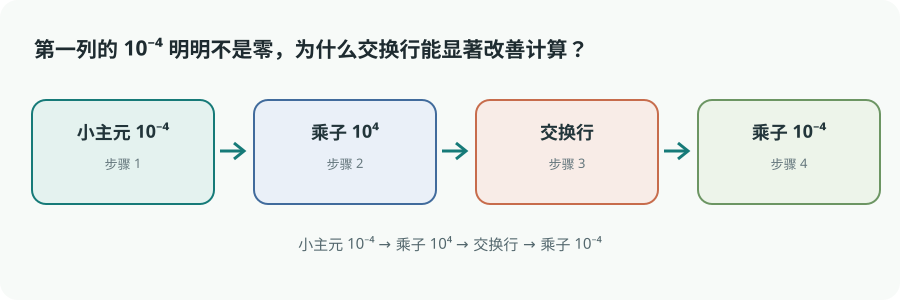

CHAPTER 2 · LINEAR EQUATION SOLVING
一个过小的主元，如何让正确的方程算出错误答案
用两行矩阵把数值消去中的误差放大过程完整展开。
取 A=[[10⁻⁴,1],[1,1]]、b=[1+10⁻⁴,2]，真实解是 [1,1]。如果不交换行，第一步乘子为 10⁴，后续会计算两个很大的数之间的差；相同矩阵经部分选主元先交换两行，乘子的大小只有 10⁻⁴。
第一列的 10⁻⁴ 明明不是零，为什么交换行能显著改善计算？

1. 大乘子不只是计算量问题
无选主元消去时，第一步乘子 m=1/10⁻⁴=10⁴。更新第二行的右端项和系数时会出现 2−10⁴(1+10⁻⁴)、1−10⁴ 这样的表达式；两个中间量尺度明显大于原始输入。
对有效数字较少的教学浮点模型，原本重要的低位可能在大数运算和相减中丢失。若在完整二进制双精度下进行，该例未必会显著失败；风险随精度和规模变化，不能伪称它在任意硬件上都会失败。
来源：Demmel, Applied Numerical Linear Algebra §2.4.1；Nick Higham, growth factor in Gaussian elimination。
2. 行交换把危险主元换成大主元
部分选主元选择当前列绝对值最大的可用元素。两行交换之后首主元为 1，下一行乘子为 10⁻⁴；对比原先 10⁴ 的巨大乘子，有效减小了中间放大。
如果把置换后的矩阵称为 PA，那么仍写 PA=LU，而不是无条件写 A=LU。恢复原问题的右端项时也必须施加相同置换 Pb。
3. 选主元的保证与没有保证
在一般 GEPP 的非零主元步骤，每个 L 的消去乘子满足 |lᵢₖ|≤1。但是 U 的元素仍可能出现明显增长；Wilkinson 矩阵展示了一个最坏情况：增长因子可达到 2ⁿ⁻¹。因此“部分选主元保证无条件稳定”是错误结论。
部分选主元对多数实际稠密矩阵表现可靠；当算法的数值前提或问题结构特殊，仍要检查增长、残差和条件数。
4. 用不同精度做可复现实验
教学程序提供一个低精度模拟的两步消去示例，及使用 float64 的 GEPP 对照。不能混淆“人为四位有效数字的模型”与“实际 NumPy 双精度求解器”。
测试先验证两种消去顺序对乘子大小的影响，再验证 GEPP 的 PA−LU 重构残差；对异常小主元和非有限输入，程序给出明确错误，而不是静默返回不可信结果。
交互判断：第一列的 10⁻⁴ 明明不是零，为什么交换行能显著改善计算？
切换情形，对照模型假设与结论。
首步乘子 10⁴；在低精度算术中，较大的中间量可能吞噬低位。